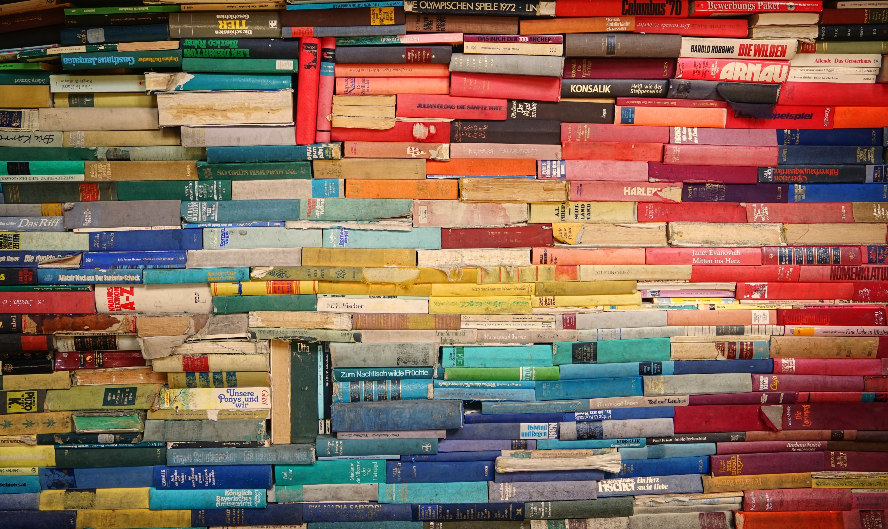

책은 내 곁을 한 번도 떠난 적이 없다.
언제나 나를 꼭 잡아주었다.
책을 주문하고 배송 오기까지의 모든 과정이
두근거리고 설렌다.
책을 고르는 기준은 좋아하는 작가의 신간,
믿을만한 추천, 호기심, 간접경험,
지적 허영심
충동구매 등등이 혼재되어 한 달 평균
10~20권 정도 구매한다.
책이 도착하면 책 비닐로 정성스럽게 포장한다.
중고서적은 알코올 솜으로 닦아내는데
그 덕에 알코올 스왑이 집에 잔뜩 있어서
코로나 바이러스 난리 통에 도움이 되고 있다.
스카치테이프에 지문이 묻는 게 싫어서
수술용 장갑을 끼고 포장하기도 한다.
책이 더러워지는 것도 방지하고
중고서적은 때때로 모서리가 많이 헤져서
보완상 비닐 커버를 해야 한다.
이제 주야장천 들고 다니면서 읽으면 끝. 출퇴근 시간에 집중적으로 ( 2시간 정도) 읽고 밑줄이나 메모보다는 마음에 드는 구절이 있으면 모퉁이를 살짝 세모꼴로 접어두어 나중에 그 페이지만 재독(再讀) 한다. 필사를 좋아해서 예전에는 열성적으로 했지만 갈수록 체력과 시간 부족으로 텍스트를 사진으로 찍어두는 것으로 대체하고 있다.s
대게 인문학 서적을 읽고 깊이와 넓이의 균형을 위해 과학기술, 건축 ,경제 자기개발 관련 서적을 읽기도 한다. 철학과 소설의 비중이 압도적으로 높고 좋아하는 작가의 작품을 수집하기도 하고 타깃을 정해서 관련 주제를 집중적으로 읽기도 한다. 최근에는 타르코프스키 감독님 관련 서적에 열중하고 있다.